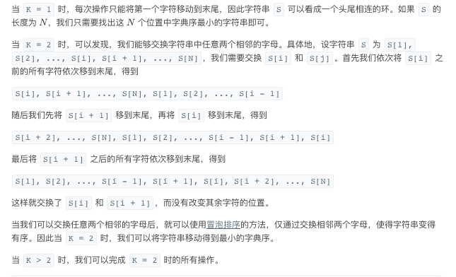

LC 899. 有序队列
https://leetcode-cn.com/problems/orderly-queue/
还是阅读中文题目比较舒服，而且也比较方便在上面看官方解答。有时候官方解答看的也是含糊的时候，再去主站看看其他人的解法。这题题解写的非常清楚，K>=2的时候可以交换任意数字，最终达到全排列状态。
注意这个归纳过程很有意思：
- 先证明s[i]和s[i+1]之间可以交换
- 然后证明s[i]和s[j]之间可以交换
- 所以s最终可以达到全排列状态

class Solution: def orderlyQueue(self, S: str, K: int) -> str: if K == 1: ans = S for i in range(len(S)): s = S[i:] + S[:i] if s < ans: ans = s else: ans = ''.join(sorted(S)) return ans